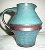
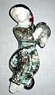
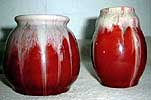
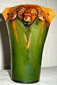

An Introduction to Danish Ceramics and Potters I

Denmark has a centuries old tradition for ceramics. Seen in proportion
to
the population there has been a wealth of potteries. Nearly each
village
had it's own potter, a good many of which were also well known abroad
in the 19th century.
We
begin in the 19th century on Bornholm (a small island in the Baltic
Sea) with Michael Andersen & Son, Roenne, Bornholm (1890-).
The factory was founded by the potter Jens Michael Andersen, who's
4 sons were all trained potters, working at the factory. At the
beginning production was mainly of kitchen ware and models of works
from associated artists, Greek vases and antiquated pots.
The
oldest son Daniel Folkmann Andersen (1885-1959) was the most creative
and artistic of the four and from 1905 he put his stamp on the artistic
development of the factory. He introduced decorative animals and
plants. Lead majolica glazes in 4-5 colors were employed, typical
of the Art Deco style of the time. In the 1920s his brother Michael
Ejner Andersen introduced the Majolica series "Dania"
and "Kobolt", also in the Art Deco style. In 1935 Daniel
Andersen's innovation "the Persia Technique" received
the gold medal at the World Exhibition in Brussels.

In
1890s the factory used the stamp "Michael Andersen" in
gothic lettering. 1916-1930 the same name was stamped in Latin letters
and from 1930 the "3 herings" mark (the Town of Roenne's
Coat of Arms) was used. Some items can be marked "C.V. Kjaer",
a merchant in Copenhagen, who ordered ceramics after his own sketches
with relief decorations. Today the factory has only a limitedl production
of a few items.
Part 1 > Jens Michael Andersen
Part 2 > L.Hjorts Terracotta
Factory, Roenne, Bornholm
Part 3 > Soeholm, Roenne on
Bornholm
Part 4 > P. Ipsens Enke, Copenhagen
Part 5 > Kongstrands Pottery,
Esberg
Part 6 > Potteries and Potters
around Horsens
Part 7 > - The Turn of
the Century
Article kindly supplied by Tove Jespersen Klitgaarden
Antique & Ceramics, Denmark. www.Klitgaarden.net
e-mail: Klitgaarden@tdcadsl.dk
More Articles
|

{kind=link}
{kind=link}
{kind=link}
{kind=link}